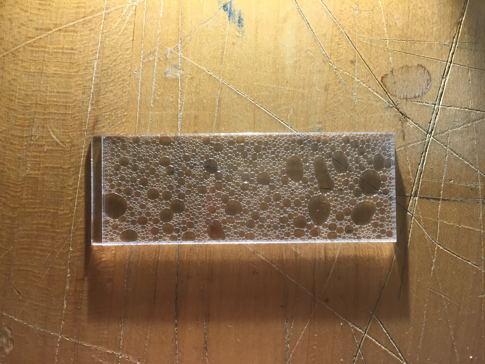
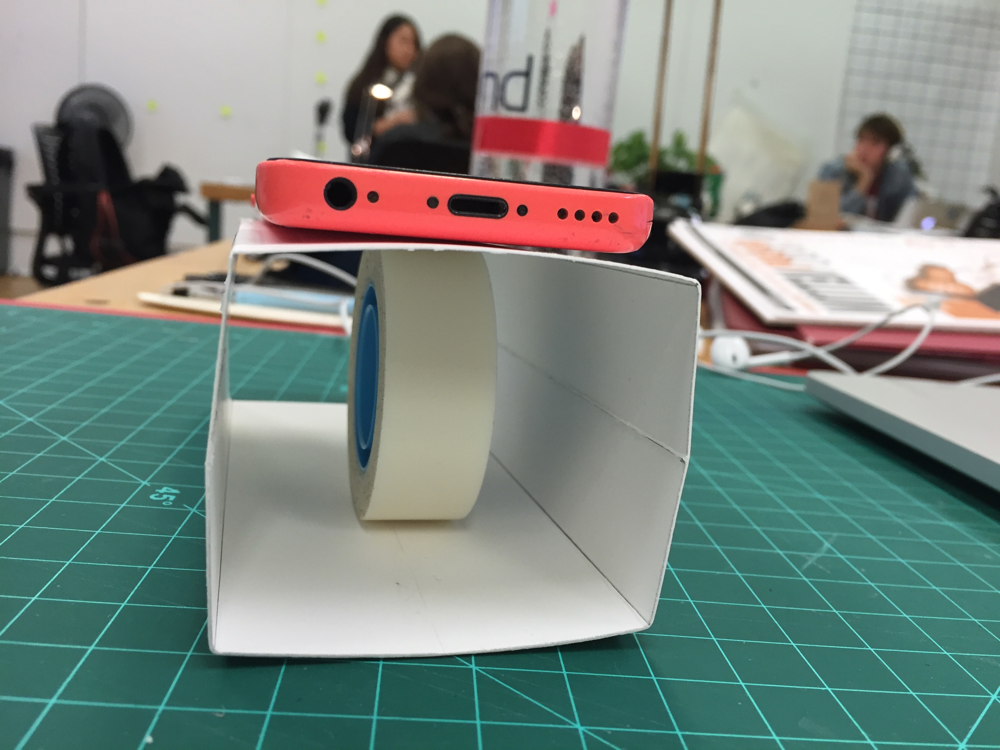
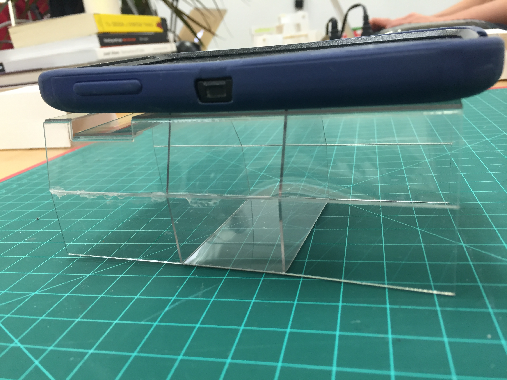
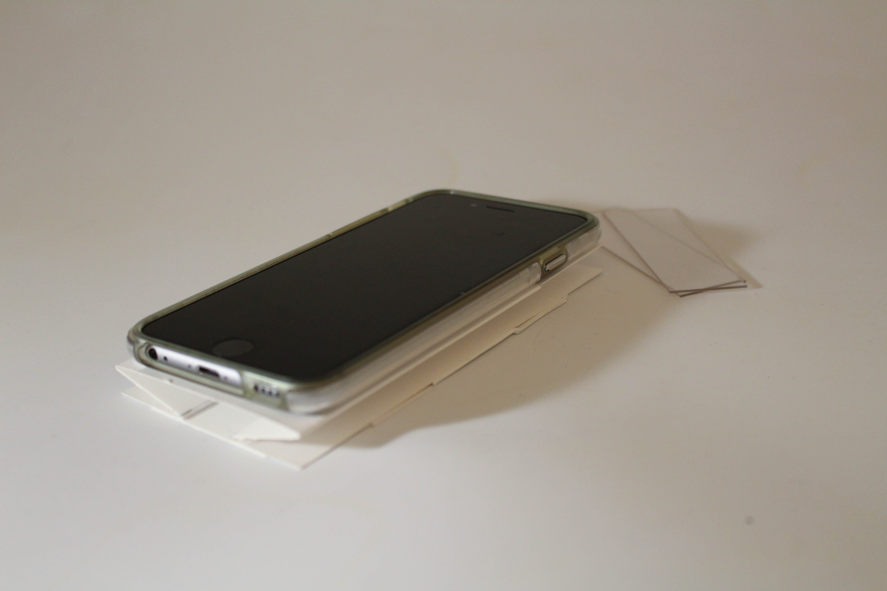
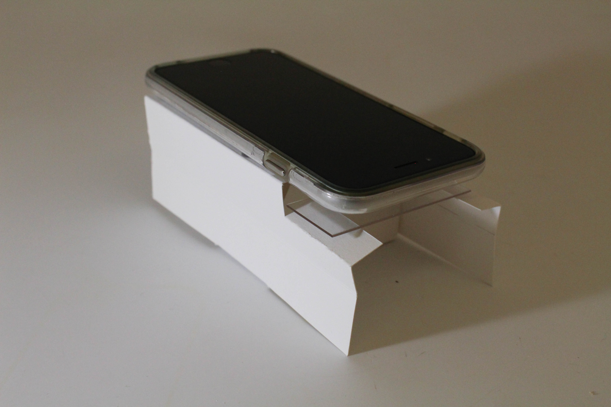
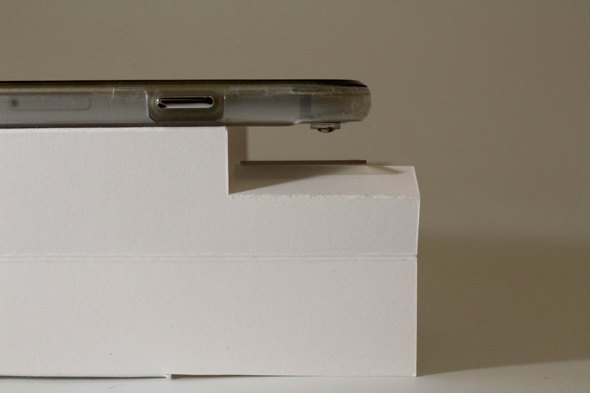
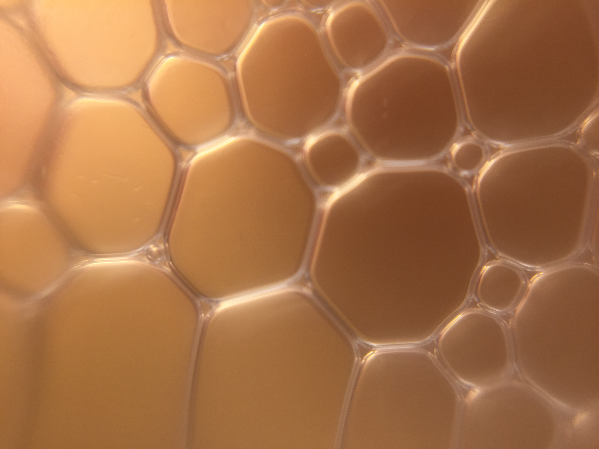
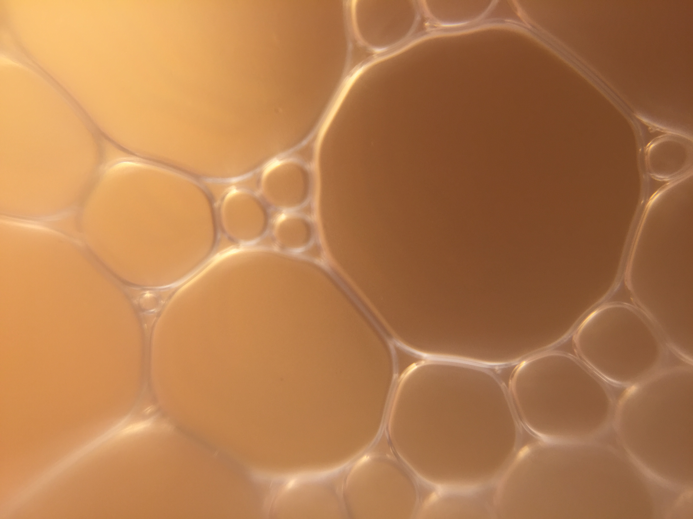

In an exercise to explore scale and its effect on and between objects and environments, I created a microscope to look closely at the structure of many items. Students were given lenses that could attach to phone cameras and magnify objects about 30 to 40 times.
My main focus in creating my structure was to emphasize portability and convenience of carrying a microscope around. As a result, I worked to create a simple base that could attach to a phone and have it be collapsible so that it can lie flat in someone's pocket.

I created the collapsible mechanism first, which just consisted of folding the sides of a box structure. My next challenge was figuring out how to use the structure to hold the phone up itself, rather than having an object propping up the weight of the phone.

For another prototype, I played around with cellulose acetate butyrate, a sturdy, yet flexible plastic, so that the phone camera could see through the structure and take images of things beneath it. I created flaps that could fold up to be perpendicular to the phone surface, which was strong enough to support the phone on its own. Unfortunately, the flap mechanism was extra unsmooth and became more and more unstable with each usage due to the scoring of the plastic. As a result, I moved back to a paper model that had slot for microscope slides, which the user would then put a specimen on.



Here are a few of the photos I took with my microscope!


